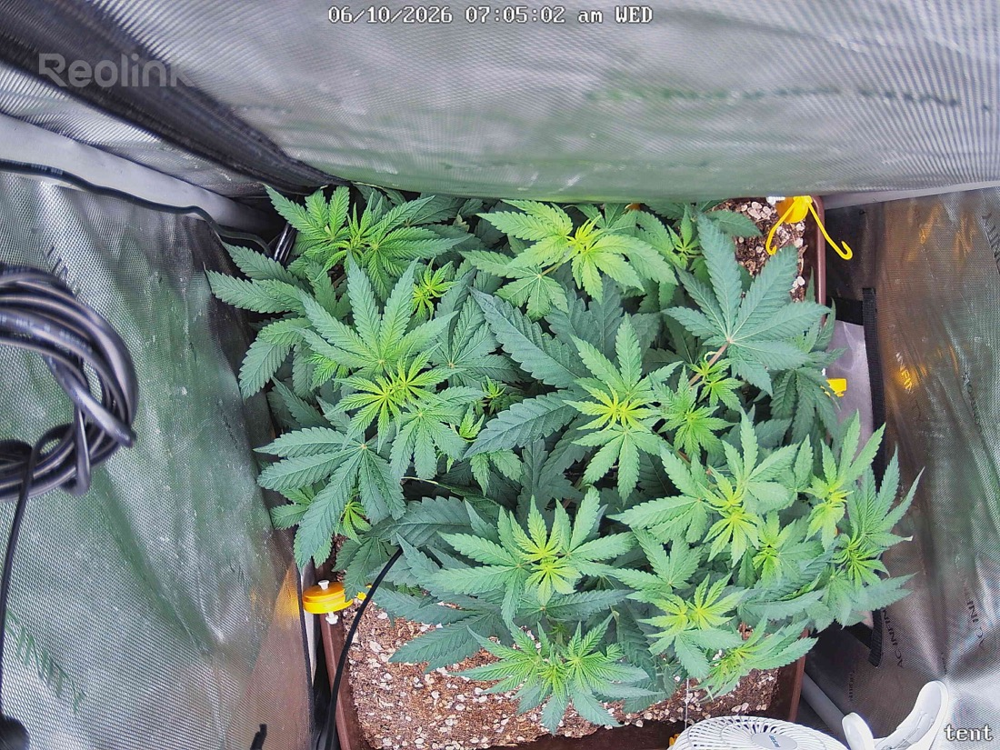

← All reports
Jun 10, 2026
Wed Jun 10, 2026 — 7:05 AM

Prognosis
Both images loaded. Here's the read:
Day-over-day (6/09 → 6/10), now ~7 days into 12/12 flip:
- Growth/structure: Canopy is full, flat, and evenly spread — LST is doing its job, lots of leveled tops competing for the light. Slight camera angle shift between frames, but no loss of canopy density; if anything the plant looks fractionally taller/fuller. Good even spacing across the tray.
- Color: Healthy medium-to-deep green throughout. The lighter lime-green new growth at several tips is normal flowering-stretch foliage, not deficiency. No interveinal chlorosis, no edge burn, no tip bleaching from the ~600 PPFD.
- Posture: Leaves are flat and praying-ish, no tacoing/cupping, no clawing, no heat droop. Soil surface looks appropriately drying down — last watered 6/7 (1gal bottom), so you're ~3 days out and likely due in the next day or so. No surface algae or salt crust.
- Pests: Can't resolve mite stippling or webbing at this resolution/angle, so the image neither confirms nor clears the spider mites you found 6/9. Trust your close-up inspection over the cam here — keep executing the Green Cleaner protocol.
- Broken node: Not obviously visible in frame; no signs of wilt or rot at any wound site.
Phase check: Germinated 4/28, flipped to 12/12 on 6/3 — ~6 weeks of veg before flip is solid for a 2x2, and you're on day ~7 of flower. Right on schedule; you should start seeing pistils/early flower formation at the tops within the next several days as stretch continues.
Suggested next actions:
- Tonight is a Green Cleaner spray night per your 3-day cadence — stay on it; mites are the only real risk on the board.
- Plan to water within ~24–48h (soil drying as expected).
- Hold light at ~600 for now — fine through early stretch. No action on light needed today.
Overall: Healthy, vigorous early-flower plant exactly where it should be — the only thing to watch is the confirmed mite population, so the spray schedule is the priority.